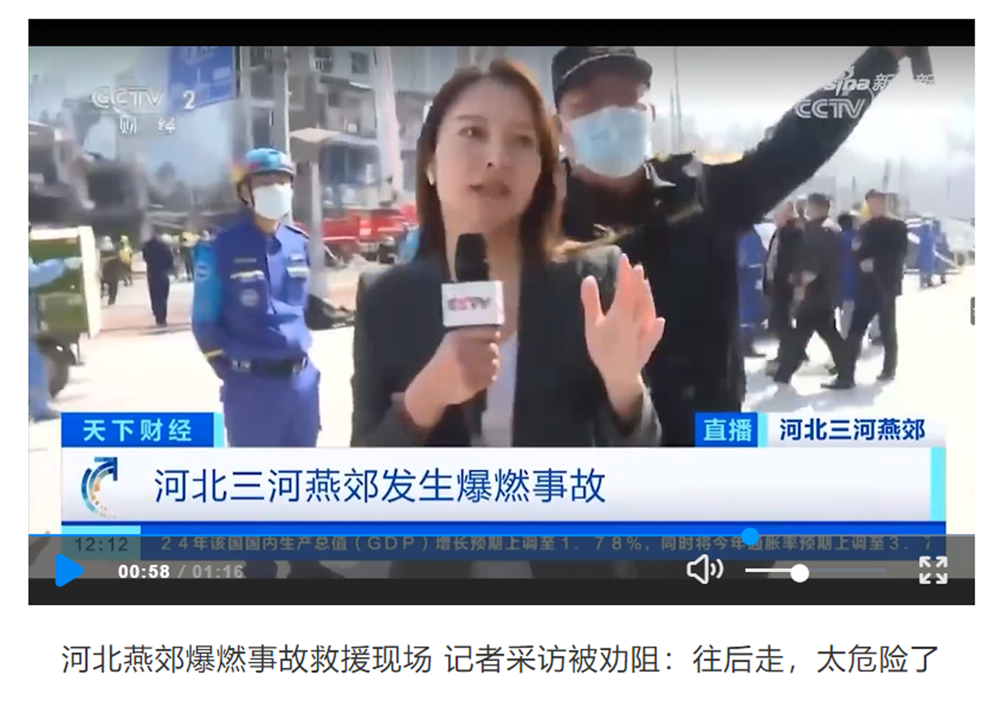
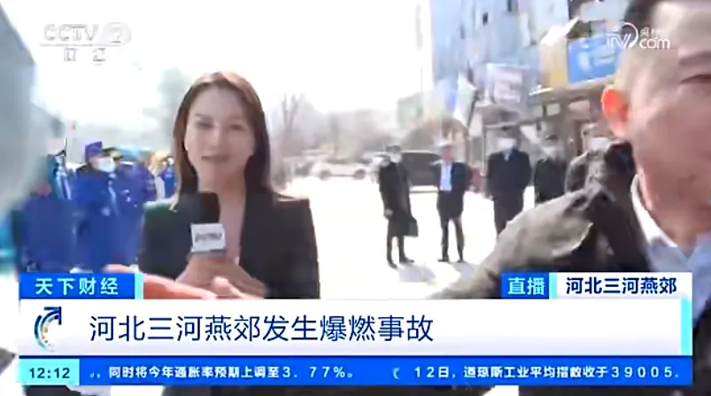
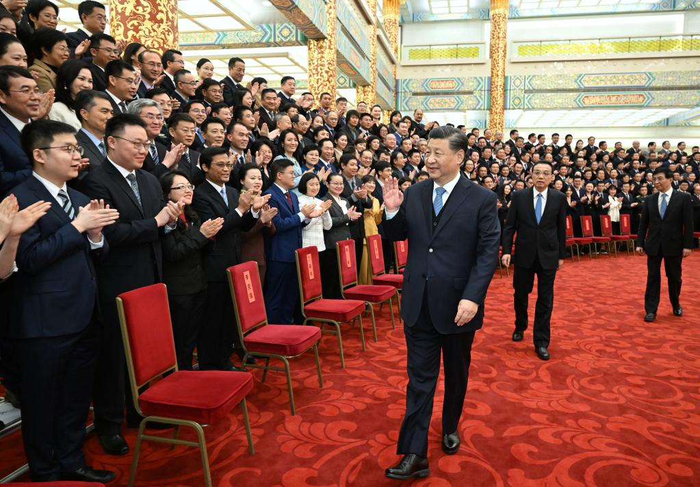
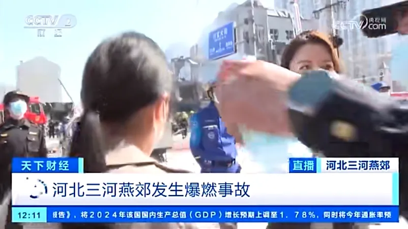
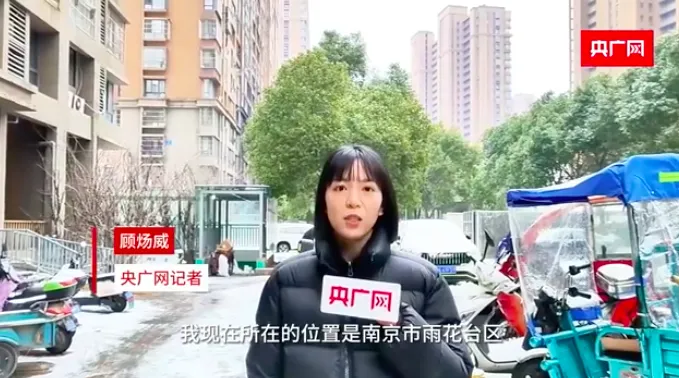

«Чтобы контролировать общественное мнение, мы не можем просто и грубо
препятствовать репортерам СМИ выполнять свои обязанности!»
Мао Юнь,
главный автор Shenzhen TV Deep View News
13 марта 2024 г. местное правительство и полиция воспрепятствовали работе
репортера CCTV по освещению пожара в Яньцзяо, Саньхэ, провинция Хэбэй.
Запись прямого эфира быстро распространилась в Интернете. Ситуация вызвала
разочарование и гнев, привлекла внимание и спровоцировала бурные дискуссии
среди журналистов и общественности.
Перевод:
"На месте спасательной операции после взрыва в Яньцзяо, провинция Хэбэй, репортерам не рекомендовали проводить интервью: возвращаться было слишком опасно".
Ссылка на видео
Ночью того же дня Всекитайская Ассоциация журналистов на официальных страницах опубликовала «Три вопроса»:
Должны ли журналисты брать интервью?
Репортеры усугубляют хаос?
Может ли одностраничный пресс-релиз действительно заменить репортаж на месте?

"Три вопроса"
Ссылка
Затем, рано утром 14 марта, штаб по ликвидации последствий
взрывов в Яньцзяо опубликовал официальный ответ, в котором
заявил, что чувствует вину и извинился перед репортерами из CCTV
и других СМИ.
Всего за 24 часа серьезная дискуссия вокруг прав журналистов
на интервью, права общественности на информацию и прав
правительства на реагирование на чрезвычайные ситуации вышла
на передний план повестки дня. В особенности — три последовательных
вопроса, заданные Всекитайской Ассоциацией Журналистов.
Время от времени журналистам Китая приходится сталкиваться с угрозами
и даже физическим насилием при освещении важных социальных проблем.
Такие слова, как «Вы хотите умереть?» в их адрес, шокируют как обычных
людей, так и профессионалов. Под огромным давлением общественного мнения
соответствующие ведомства, подразделения и предприятия также приняли
некоторые меры по исправлению положения, пытаясь восстановить и уменьшить
неблагоприятные последствия своих решений. Однако подобные инциденты
продолжают происходить один за другим, а негативные социальные последствия
только накапливаются.
NB
В Китае правительство строго контролирует деятельность
общественных организаций, включая те, что защищают права журналистов.
Это создает сложности для возникновения и функционирования независимых
организаций, поэтому ACJA остается единственной значимой ассоциацией
журналистов в стране.

С нас — защита,
с вас — верность
Одной из основных задач Ассоциации журналистов является защита
законных прав и интересов представителей профессии, включая свободу
интервью, независимость новостного освещения и личную безопасность
журналистов. Однако в реальных ситуациях репортеры могут столкнуться
с различными препятствиями при проведении расследований, такими как
трудности с получением информации, запрет на интервью и даже угрозы
безопасности. Ассоциация журналистов играет ключевую роль в защите прав
и интересов журналистов и расширяет их возможности по самозащите,
предоставляя юридическую помощь, услуги образования и покровительство
со стороны отраслевого руководства.
С другой стороны, Ассоциация журналистов также руководит
средствами массовой информации относительно выполнения своих
социальные обязанностей. Добиваясь правды в новостях, репортеры
и ассоциации журналистов также должны учитывать возможные социальные
последствия репортажей и избегать ненужной паники или недопонимания.
Эта ответственность требует от Ассоциации журналистов не только
содействовать свободе прессы, но и обучать репортеров ответственному
освещению событий.

Си Цзинпин встретился с представителями прессы (2021).
Фото: пресс-центр Госсовета КНР.
http://english.scio.gov.cn/topnews/2021-12/16/content_77933878.html
“对舆论监督要有承受力，不能怕自己的‘形象’‘利益’受到损害而限制媒体采访报道。
同时，媒体发表批评性报道，事实要真实准确，分析要客观，
不要把自己放在‘裁判官’的位置上。”
«Вы должны быть в состоянии противостоять контролю общественного мнения и не
должны ограничивать интервью и репортажи в средствах массовой информации из опасения,
что ваш собственный «имидж» и «интересы» будут повреждены. В то же время, когда СМИ
публикуют критические сообщения, факты должны быть правдивыми и точными, а анализ должен
быть объективным, и [журналисты] не [должны] ставить себя на «положение мирового судьи»
Си Цзиньпин
http://www.zgjx.cn/2023-09/27/c_1310743482.htm
NB
Всекитайская Ассоциация Журналистов не является независимой организацией
и контролируется правительством Китая, поэтому не всегда защищает интересы
журналистов, особенно если они критикуют власть.

Чиновники Хэбэя быстро принесли извинения, а пресса заявила, что «законные
интервью — это права журналистов». Все больше людей надеются, что раскрытие
информации о крупных авариях будет более своевременным и прозрачным. Помимо
«трех последовательных вопросов» Ассоциации журналистов Китая, в дискуссии
фигурирует множество других неоднозначностей журналистской профессии в КНР.
I
Могут ли требования правительства и средств массовой информации быть противоречащими?
Когда происходят несчастные случаи, такие как пожары и взрывы
с человеческими жертвами, с точки зрения местных органов власти, первоочередной
задачей должно быть спасение. «Это вопрос жизни и смерти, и мы надеемся исключить
любое поведение, которое может повлиять на спасательную операцию на месте,» – думают они.
С точки зрения средств массовой информации, профессиональный инстинкт «Я на месте»
движет каждым репортером, надеющимся сделать репортаж с близкого расстояния и как можно
скорее донести до общественности подробности произошедшего. Может показаться,
что требования двух сторон противоречат друг другу. На самом деле ответственность
правительства состоит в том, чтобы своевременно реагировать на социальные проблемы.
Как – и ответственность журналистов.
С точки зрения коммуникации с общественностью правительство слишком полагается
на свой «одномерный» голос, заключенный в форматных рамках пресс-релизов.
В нынешней среде динамичного общественного мнения и социальных сетей трудно «завоевать
доверие народа» канцелярскими документами.
Когда правительственные ведомства полностью закрывают доступ репортерам,
чтобы «контролировать ситуацию» и «обеспечивать безопасность», это с
большей вероятностью порождает ложные спекуляции, в результате чего
правительство впадает в кризис доверия и попадает в «ловушку Тацита» –
при потере популярности правительства и падении доверия к нему со стороны
общественности, любые его действия будут оцениваться как негативные вне
зависимости от их объективных качеств. Скорость «остывания» общественного
недовольства
во многом зависит от эффективности работы с общественным мнением,
что невозможно при слепом ограничении работы СМИ. Правительства с высоким
уровнем управления, как правило, хорошо относятся к
журналистам и хорошо используют средства массовой информации, публикуют
информацию и направляют общественное мнение в соответствии с правилами
распространения новостей и, в конечном итоге, формируют конвергенцию дискурса
между СМИ и общественностью.
II
Как правительству следует обращаться к средствам массовой информации и общественности?
В чрезвычайных ситуациях право средств массовой информации на интервью
должно полностью гарантироваться. Например, посещение многочисленными журналистами жилого района в Нанкине, где произошел пожар, дало
жителям возможность высказаться о ситуации.
Вполне возможно, что после пожара, когда различные средства массовой информации раскрыли тот
факт, что жители района много лет назад жаловались на угрозы безопасности, городские и районные
партийные и правительственные ведомства и ответственные лица оказались под сильным давлением со
стороны общественности.
Данные ситуации показывают, что размышления о том, «как правительство должно вести себя со
СМИ и общественностью», имеют более ясный ответ: объективность, откровенность и прозрачность.

Репортаж с места ликвидации пожара в Нанкине, 23 февраля 2024 г.
Источник
III
Существует ли конфликт между истиной и своевременностью?
На этот раз интервью CCTV в Хэбэе столкнулось с препятствиями, и некоторые
пользователи сети задали вопросы: репортер поспешно начал прямую трансляцию, и большую часть информации
было трудно проверить. Что, если сообщение было неверным?
Это правда, что обязанность средств массовой информации – раскрывать правду точно и во всей полноте.
Подобные опасения относительно корректности не беспочвенны.
Однако блокирование голоса средств массовой информации из-за того, что они обеспокоены ошибками
освещения, только помешает раскрытию истины. Информация о социальной реальности обычно фрагментированная,
и журналисты стараются собрать картину происходящего по частям. Если вы настаиваете на точности и не
допускаете возможность освещения в СМИ, в конечном итоге правительство, скорее всего, понесёт ущерб.
Отношения между правительством и средствами массовой информации должны быть «симбиотическими,
профессиональными и полными ответственности», а также основанными на общественных интересах.
В условиях чрезвычайных ситуаций правительство может не только использовать средства массовой информации
для распространения информации, но также обращаться к практике журналистов для выявления противоречивых
вопросов и корректировки вектора политической работы.
NB
В «Национальном общем плане действий в чрезвычайных ситуациях» подчеркивается, что публикация информации
о чрезвычайных ситуациях должна быть своевременной, точной, объективной и всеобъемлющей.
Поэтому, независимо от ситуации, поддержка защиты добросовестных интервью и репортажей СМИ является
бесспорным и необходимым шагом.